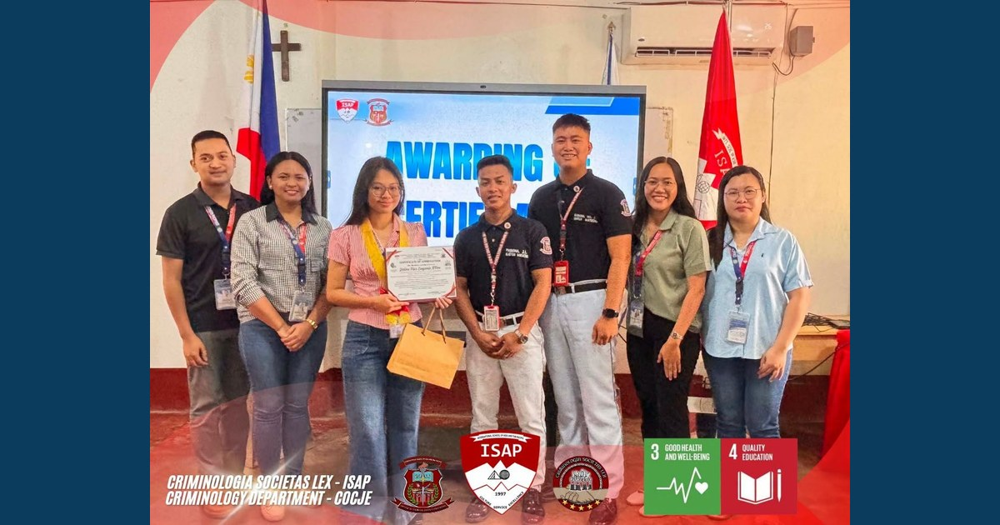

PROJECT RELIEF: Let It Out, Lift It Up! — Project RELIEF Turns Research into Action, Strengthens Student Resilience Through Three-Session Mental Wellness Program

The College of Criminal Justice Education (CoCJE), in collaboration with the Research and Development Center (RDC), concluded Project RELIEF: Let It Out, Lift It Up!, a three-session research-utilization initiative that transformed student wellness concerns into a structured program for emotional awareness, stress management, self-care, and psychological resilience.
Read full article